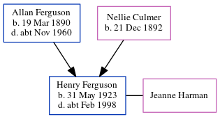

Henry G Ferguson 1923 - c1998
[ Home ] | [ Calendar ] | [ Surnames Index ] | [ Census Index ] | [ Family History ]An apprentice engineering junior and the child of Allan Ferguson (a shunter petroleum refinery) and Nellie Culmer, Henry Ferguson, the third cousin once-removed on the mother's side of Nigel Horne, was born in Strood, Kent, England on May 31, 19231,2,3. He married Jeanne Harman in Thurrock, Essex, England around Nov 19504. On Sep 29, 1939, he was living at 15 Billet Road in Thurrock1.
He died c. Feb 1998 in Brentwood, Essex, England3.
Parents
- Allan Emery was born on Mar 19, 1890
- Nellie Louisa was born on Dec 21, 1892
Citations
- 1939 Register - Findmypast (was the son of the head of the household)
- England & Wales births 1837-2006 - Findmypast
- England & Wales deaths 1837-2007 - Findmypast
- England & Wales Marriages 1837-2005 - Findmypast
Media
England & Wales deaths 1837-2007 - BMD/D/1998/2/82488766
England & Wales births 1837-2006 - BMD/B/1923/2/AZ/000457/042
England & Wales marriages 1837-2005 - BMD/M/1950/4/AZ/000385/086
Family Tree
Generated by ged2site. Last updated on Jun 11, 2024